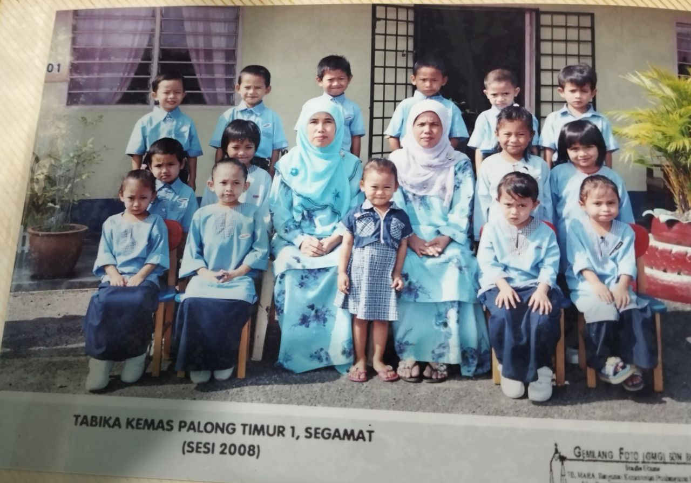
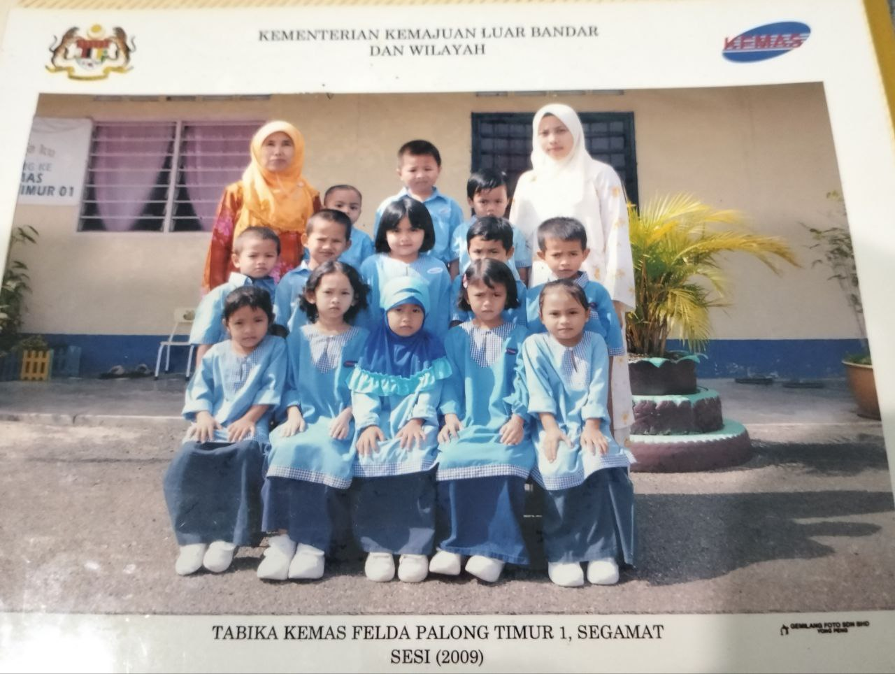
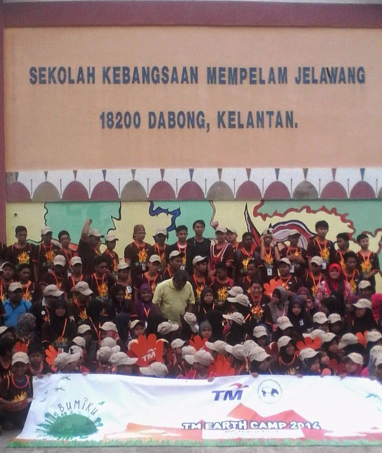
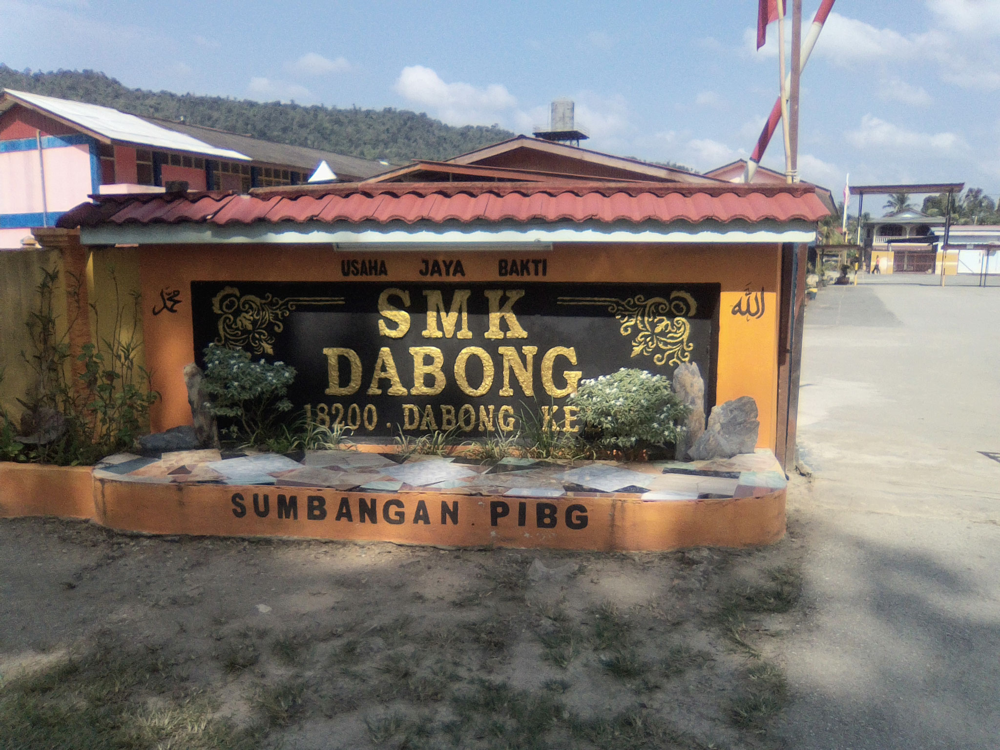

I am Nur Najiha Binti Anuar a student from Uitm Kedah.
Currently studying library management and this is my personal website.
I make this website for this individual assignment of subject IML470
My Education
Click on the play button to play a sound:
My educational journey began at Tadika Kemas Palong Timur 1, Johor. Where I learn how to read and count numbers. This is the place where I enjoy to play with all my friends until the end of pra school.


and when I was 9 years old I moved to SK Mempelam Jelawang, Kelantan. This school is near Gunung Stong, this place has many foreigners that want to hike and draw the Gunung Stong, they are really friendly with kids. I have many friends who are kind to me they also help me with homework.

After I was 13 years old I went to SMK Dabong High School until I ended my SPM. I enjoy my life at this school, I have many good friends, and we always play around during the lesson and we always make our homeroom teacher get angry. It was fun until Covid-19 came at 2020

After STPM I attend UiTM Kedah, where I start to study majoring in Library Management. At this university, I made many friends. We always are a group for all group assignments. We always teamwork and hardworking and do our best to do our assignments.